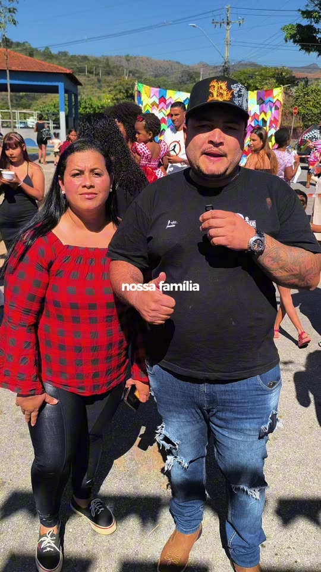

Educação
Educação infantil, leitura, formação comunitária e inclusão digital.
Campanha de mantenedores mensais
Estamos construindo uma rede de pessoas que decidiram contribuir mensalmente para fortalecer a continuidade da creche e dos projetos sociais da Rede ASAS.
A partir de R$ 10 por mês. Quero ser uma das 1.000 ASASProgresso da campanha
A arrecadação recorrente ainda não foi iniciada. O contador passará a crescer somente após a integração segura dos pagamentos e a conciliação no ASAS HUB.
Por que 1.000 ASAS?
Não precisamos que poucos façam muito.
Precisamos que muitos decidam fazer um pouco.
A contribuição recorrente ajuda a criar previsibilidade para alimentação, materiais, profissionais, atividades e manutenção dos projetos. Cada pessoa escolhe um valor possível para sua realidade.
Escolha como deseja participar
Esta etapa registra seu interesse. Nenhuma cobrança será realizada até a integração segura com o gateway de pagamentos estar concluída.
O que essa contribuição fortalece?
Educação infantil, leitura, formação comunitária e inclusão digital.
Atividades que fortalecem disciplina, convivência e trabalho em equipe.
Música, comunicação, criatividade e novas formas de expressão.
Acolhimento, fortalecimento de vínculos e proteção social.
Materiais, alimentação e condições necessárias para as atividades.
Previsibilidade para manter os projetos funcionando ao longo do ano.
A contribuição da Campanha 1.000 ASAS apoia a continuidade institucional. A campanha do novo prédio possui controle separado.
Como funcionará
A partir de R$ 10 mensais, conforme sua possibilidade.
Somente os dados necessários e consentimentos claros.
O pagamento será processado por gateway integrado e auditável.
A futura área Minha ASA reunirá contribuições e impacto aprovado.
Confiança e transparência
Indicadores públicos terão definição, período, fonte e status de validação. Pagamentos pendentes não serão contabilizados como recebidos.

Dúvidas frequentes
Ainda não. Nesta primeira etapa, o site registra interesse. A cobrança só será disponibilizada após integração e testes com um gateway seguro.
Não. A Campanha 1.000 ASAS é destinada à continuidade da creche e dos projetos. O novo prédio é uma campanha separada, com controle próprio.
Automaticamente pelo ASAS HUB, considerando apenas mantenedores ativos com pagamento confirmado conforme o critério oficial aprovado.
Sim. As regras e os canais estarão visíveis antes da adesão, sem criar barreiras artificiais para alteração, pausa ou cancelamento.
Existem muitas formas de fazer parte
Conheça os dados validados e os cuidados para doar.
Ver opções → EmpresasRecursos, serviços, materiais e conhecimento.
Conversar → VoluntariadoCadastre seu interesse para avaliação da equipe.
Participar → Novo prédioConheça o projeto, o orçamento preliminar e a campanha.
Conhecer →